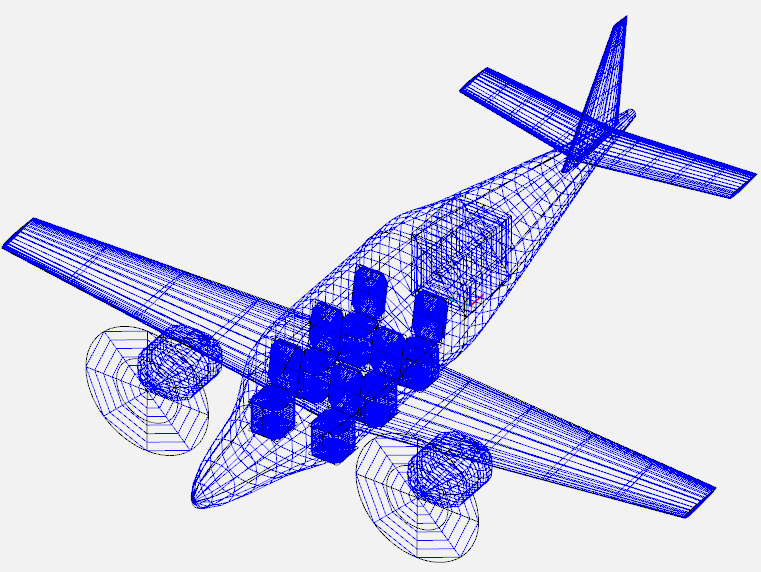

Center of gravity#
This section demonstrates CG computation using the example airplane. The first step is to determine the location of major components based on a reference system. Next step involves estimating the CG location for each component. Finally, one can compute the CG of the airplane using
where \(x_{CG_k}\) and \(W_k\) are x-coordinate of the CG and weight of the \(k^{th}\) component. Note that above formula is for determining CG location along x-axis but a similar equation can be used for y and z axis. Refer to lecture notes, Roskam Part 2 Chapter 10, and Raymer Chapter 15 for more details.
NOTE: The origin of the reference system should be placed such that the CG location of each component is positivie. Morevoer, the origin should be picked so that CG location of any component in a future derivative aircraft is also positive. Refer to figure 10.1 in Roskam Part 2 for a visual depiction.
Component CG Location#
This sub-section describes how the CG location for various components are determined for the example airplane. Note that only x CG location for each component is determined but a similar approach can be followed for y and z axis. The origin of the reference system is placed such that the airplane nose tip is at \(x=3.4\) ft. Since fuselage is 31.6 ft long, the fuselage end will be located at \(x = 35\) ft.
One can start from the back of the airplane to determine the location of each component since tail location is approximately known (almost at the end of the fuselage). Then, wing location can be determined using tail moment arms determined in tail sizing section. For the example airplane, once wing is fixed, the powerplant location can be determined since engines are mounted on the wing. The main landing gear location can also be determined since it is mounted close to engine and retracted into the wings. Finally, nose landing gear is fixed based on its length, close to the front of the fuselage. Once a component is fixed, Figure 10.2 from Roskam Part 2 can be used for determining the CG location from the origin of the reference system.
NOTE: Locating the components involves fair amount of trial and error. It also consists of quick hand calculations, use of engineering judgement and inspiration from similar airplanes. It is recommended to create an OpenVSP model based on the determined component locations to perform a visual check.
In this demonstration, the vertical tail is fixed first close to the end of the fuselage. Using vertical tail planform details and Figure 10.2, it is determined that vertical tail CG will be at \(x=32.7\) ft from the origin. Next, horizontal tail planform location is fixed slightly ahead of the end of the fuselage since horizontal moment arm is shorter than vertical moment arm. Using planform details and Figure 10.2, it is determined that horizontal tail CG will be at \(x=32.4\) ft from the origin. Next, wing location is determined using tail moment arm, which lead to wing CG being located at \(x=15.6\) ft.
Next, powerplant is located using engine dimensions and required propeller clearance. It was found that propulsion system CG is located at \(x=12.2\) ft. Finally, the main landing gear is located based on its mounting position (close to the engine spanwise location). The CG of the main LG is located at \(x = 16.1\) ft. The CG of the nose LG is fixed at \(x = 7.4\) ft based on engineering judegement and the extended length of the nose gear. The fuselage CG is estimated using Figure 10.2 in Roskam Part 2, and was found to be at \(x = 15.7\) ft. The CG of the miscellaneous components is approximated to be at 15.7 ft (same as fuselage CG).
Below image shows an OpenVSP model created using exact component locations to perform visual check:

Below table summarizes these results and computes moment generated by each component:
Component |
Weight (lbs) |
Moment arm (ft) |
Moment (lbs-ft) |
|---|---|---|---|
Wing |
344 |
15.6 |
5366.4 |
Fuselage |
367 |
15.7 |
5761.9 |
Horizontal tail |
42 |
32.4 |
1360.8 |
Vertical tail |
39 |
32.7 |
1275.3 |
Main LG |
78 |
16.1 |
1255.8 |
Nose LG |
26 |
7.4 |
192.4 |
Propulsion system |
1663 |
12.2 |
20288.6 |
Miscellaneous |
555 |
15.7 |
8713.5 |
Total |
3114 |
- |
44214.7 |
Based on the above table, the CG will be located at \(x = 14.2\) ft from the origin. The CG location is usually written in terms of the fraction of the mean aerodynamic chord (MAC). The LE of the MAC is at \(x = 13.85\) ft and MAC is 4.3 ft. Hence, CG of the airplane is at 8% of the MAC. For the example airplane, this is probably the most forward CG location since fuel and passengers will be move the CG further back. This concludes the CG computation, next section is about how CG location changes when airplane is loaded/unloaded.